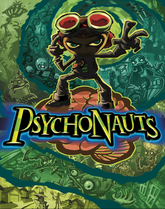

Platformer · 2005
Psychonauts
Levels shaped like damaged minds, written sharper than most films.

Cover: Wikipedia: Psychonauts
Facts
- Released
- 2005-04-19
- Genre
- Platformer
- Category
- Platformer
- Platforms
- PC, PlayStation, Xbox
- Developers
- Budcat Creations, Double Fine
- Publishers
- Majesco Entertainment, THQ
PC requirements
- Minimum
- [object Object]
- Recommended
- [object Object]